On the land
Practices that stay on the farm
Residue management, drip, organic inputs, and lighter tillage — work a farmer can adopt without leaving the crop or the village.

glaubark
The company
Glaubark Solutions develops high-quality carbon credit projects at the intersection of agriculture, climate finance, and regenerative farming — connecting India’s rural communities with global climate action.
Powering Clean Change
0K+
Hectares of agricultural land covered
0+
Districts in Maharashtra and growing
0+
States across India — MH, PB, KL, ML
Who We Are
Climate action should not stop at emissions. In drought-prone belts of Maharashtra, farmers already live with unseasonal rain, tired soil, rising input costs, and uncertain crop prices. Glaubark exists so those same farmers can restore the land, stay on it, and earn from the carbon their better practices lock away.
Residue management, drip, organic inputs, and lighter tillage — work a farmer can adopt without leaving the crop or the village.
When those practices cut emissions and store carbon, we build the record so the farmer can be paid for that outcome — alongside the harvest.
Better soil and water use mean the farm is less brittle when the monsoon arrives late, early, or not at all.
From FPOs and sugar factories to voluntary buyers, we carry the project cycle so smallholders are not asked to navigate a registry alone.
Our Story
Glaubark began with an internship. While working at Tata Sons in Mumbai, co-founder Dhruv Sakore was writing a research paper on green finance and its role in the global energy transition. In the course of that research, he discovered carbon credits — and became deeply interested in their potential to fund climate-positive projects at scale.
The idea immediately connected with something personal. Dhruv comes from Marathwada — a drought-prone region of Maharashtra with some of the highest rates of farmer distress in India. Growing up in an agricultural family, he had witnessed firsthand how unseasonal rainfall, depleted soils, volatile crop prices, and limited access to modern farming knowledge erode farmer livelihoods over generations.
This made Dhruv see carbon credits differently — not just as an environmental accounting mechanism, but as a financing tool for farmers. If farmers adopted regenerative practices that improved soil health, reduced emissions, and sequestered carbon, they should also be able to earn from the carbon credit market. Climate action and farmer welfare didn’t have to be separate goals.
Dhruv began sharing the idea with friends. One of those conversations reached Vatsal Agarwal, a friend and fellow student in London. Vatsal was looking to build something meaningful and new — and saw strong potential in the vision. After several deep discussions, Vatsal came on board, and together they founded Glaubark Solutions.
What started as a student-led research idea has grown into a company working directly with farmers, FPOs, sugar factories, and agricultural partners across Maharashtra, Punjab, Kerala, and Meghalaya — approaching 100,000 hectares of land under carbon project development.
The people

Marathwada, Maharashtra
His roots run through Marathwada, a region where drought and tired soil have long defined the reality of farming. In Mumbai, while working on a green-finance paper at Tata Sons, he began to see a different possibility: turning carbon credits into a meaningful income stream for the farmers whose land he knew so closely.
Carbon credits should not just be traded in boardrooms. They should reach the hands that grow our food.

London → Pune
Was in London looking to build something that would matter at scale when Dhruv shared the Glaubark idea. He came on board to turn that conviction into operations — the systems and partnerships that connect Indian farmland to climate finance.
The climate crisis has an agricultural solution. We just need to build the infrastructure to unlock it.
Our Foundation
"To make Indian agriculture a global model for climate action, farmer prosperity, and regenerative land management."
"To empower farmers through regenerative practices, generate high-integrity carbon credits, and unlock climate finance as a new source of rural income."
"Become India’s foremost farmer-centric carbon developer — bridging rural communities and global climate finance for a more sustainable agricultural future."
10+
Regenerative interventions per farm
VCS
Verified Carbon Standard certified
100%
Farmer-first revenue model
∞
Long-term partnerships, not one-off transactions

Farmers are on the front lines of climate change. In regions like Marathwada, drought, erratic rainfall, and soil degradation aren’t abstract risks, they’re annual realities that threaten livelihoods.
Regenerative farming practices can change this. They restore soil health, reduce emissions, improve water efficiency, and build long-term resilience. But for small and marginal farmers, accessing carbon markets remains out of reach — too complex, too documentation-heavy, and too disconnected from ground realities.
Glaubark bridges that gap.
We work directly with farmers to adopt better practices, build the monitoring and documentation infrastructure that carbon projects require, and connect verified climate impact to voluntary carbon markets. The result: climate action that generates real, additional income for the people who need it most.
Contact Us